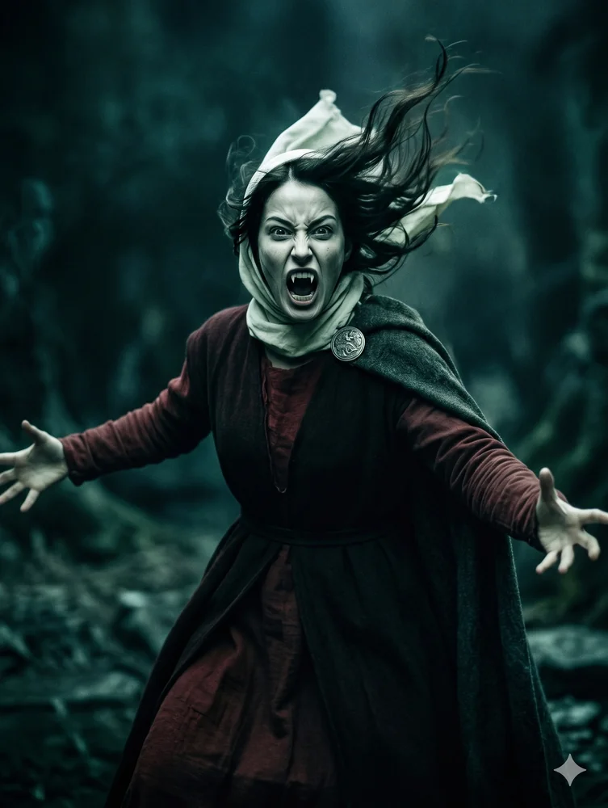
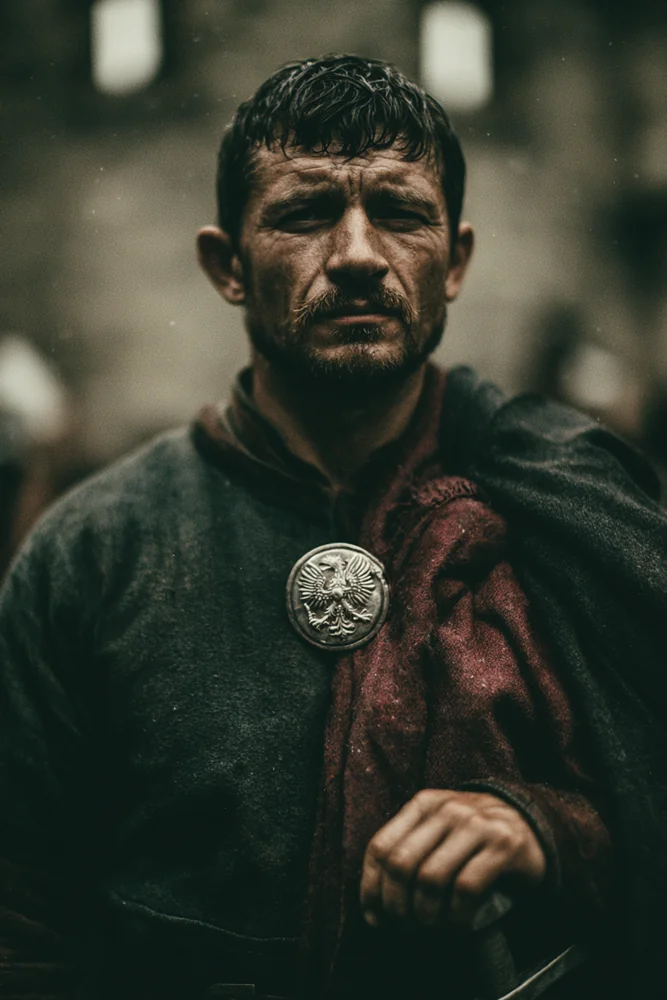
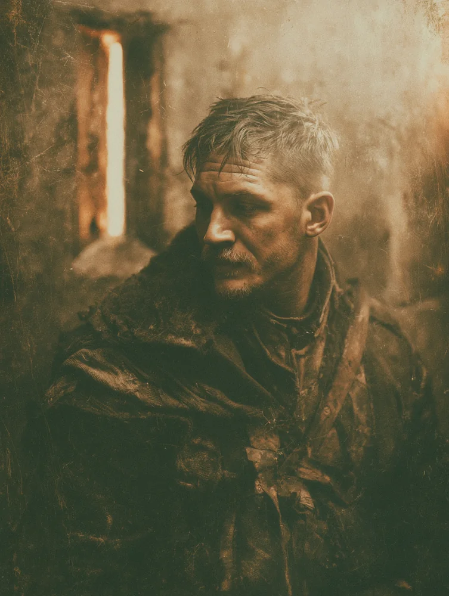
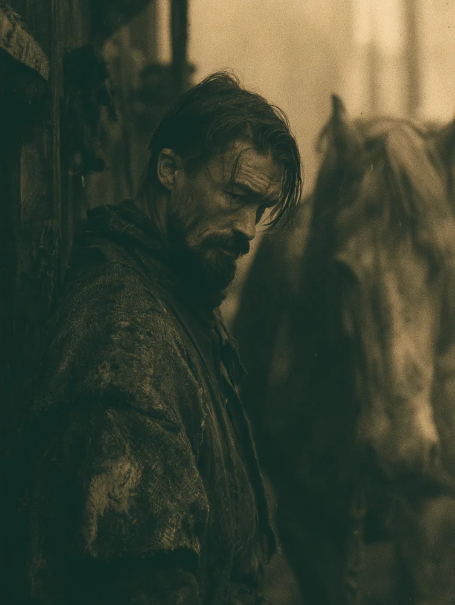
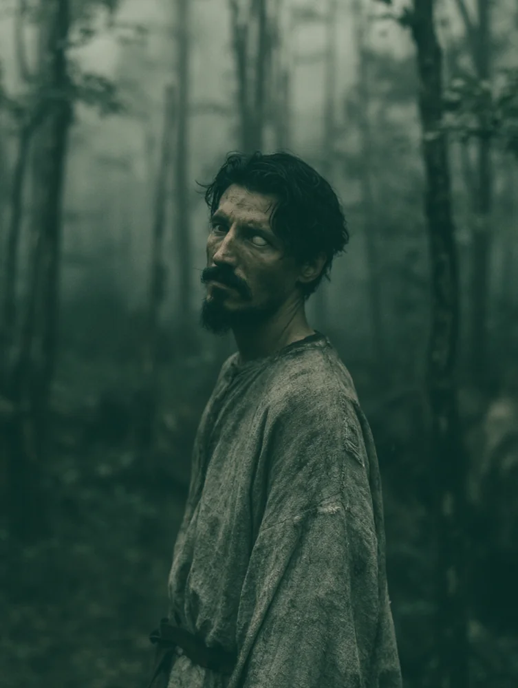
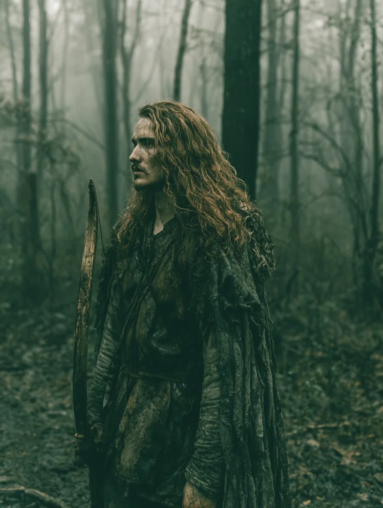
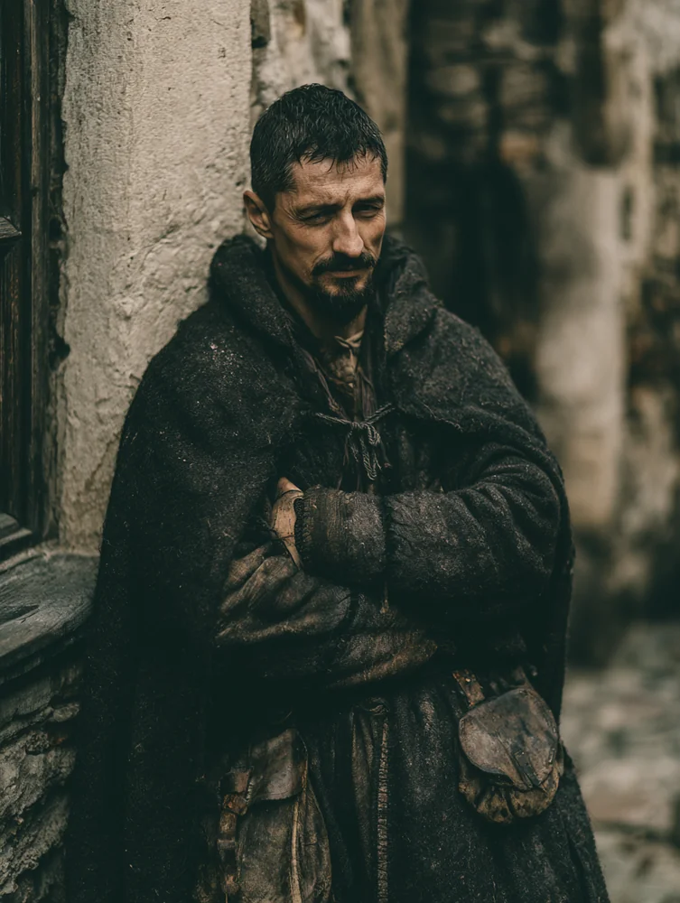
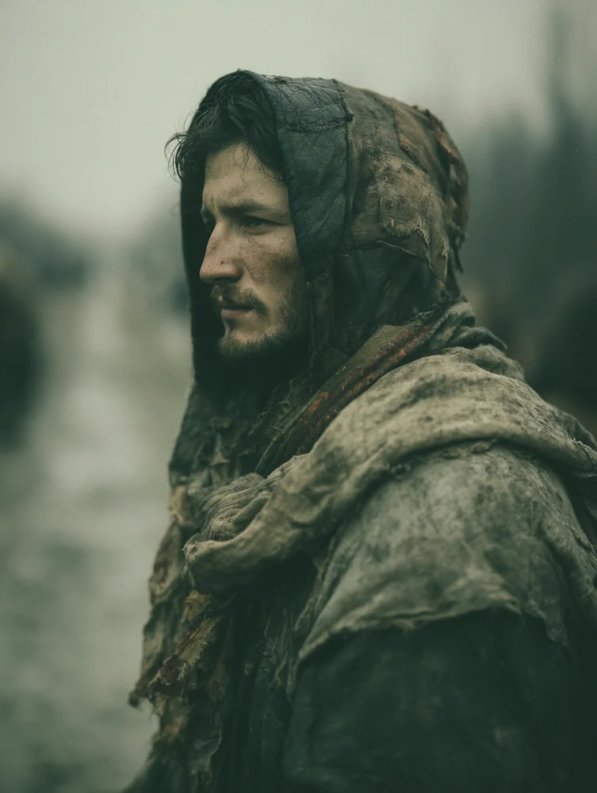
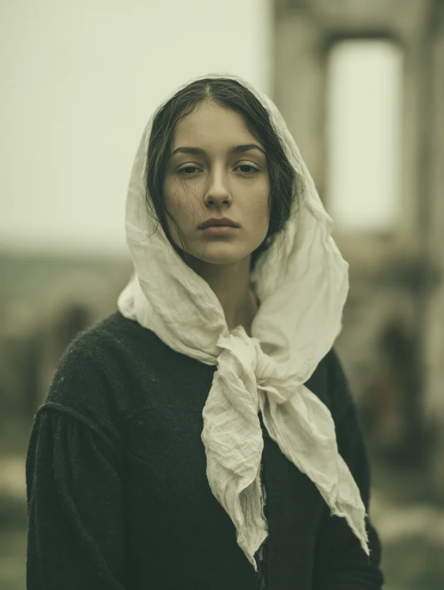
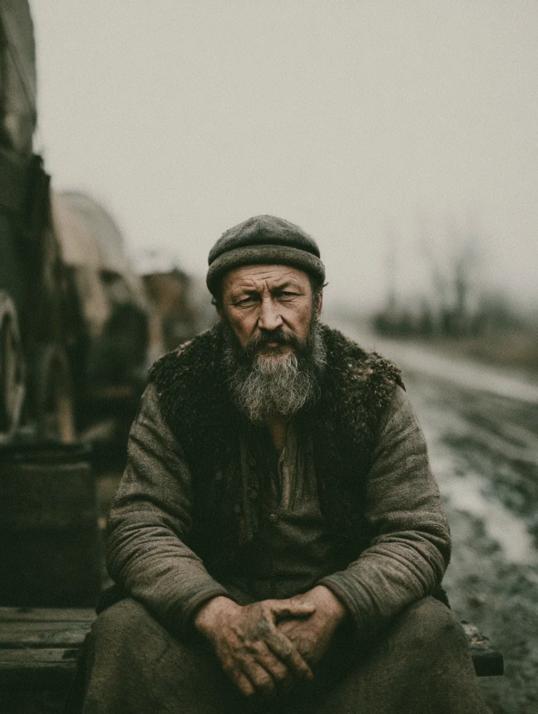

Home›Household

Road of Kings · Via Regalis · Chronicle: War of Princes
Pękosław z Białowieży broke Tomisława down and rebuilt her as an instrument of aristocratic poise and koldunic mastery. Before her transformation was complete, he arranged her marriage to Graf Światosław Odrowąż — a calculated play to secure her mortal mask. She did not leave the Carpathians willingly. The Bondslave flaw chains her to his will, and he commanded it. He sent her out because her success feeds his prestige, her absence reduces strain on local food supply, she may uncover new magical knowledge along ley lines, and she is a potential rival removed. He is at peace with her hatred of him.
She travels this perilous 1242 landscape as a brilliant but fragile political glass cannon, walking the rigid Road of Kings with an aura of supreme, chilling self-mastery. She possesses formidable mastery over Dominate, Protean flesh-crafting, and the primal elemental paths of Koldunic Sorcery, yet she is balanced on a razor's edge by profound physical vulnerabilities — including a fatal weakness to a wooden stake and a double-dose of her clan's ancient curses.
With eye contact, issue a single-sentence command to be obeyed to the letter, completable in a single turn. No roll required against an unprepared mortal. A resisting victim or another vampire requires a contest.
Defiance rolls for willful thralls are made at a three-dice penalty; thralls may not spend Willpower on them. Total failure on a defiance roll means the Blood Bond does not weaken that month. Used almost exclusively on Światosław.
A supernatural red gleam in the eyes grants sight in total darkness, including supernatural darkness. Confers two bonus dice to Intimidation pools against mortals while active.
Skin, muscle, and bone may be sculpted or warped. The Old Clan considered this power uncouth. She has never used it. She knows she has it the way she knows she has bones — untested, not thought about.
Initiatory bond with Earth. The koldun bleeds into the element, commanding it within a radius based on Sorcery rating. Can sense through the element and perceive mystically-hidden beings (Resolve + Blood Sorcery vs Wits/Resolve + Obfuscate). Duration: One scene; renewable at cost.
Bond with Water. Sensing and commanding water within radius. Can perceive through rivers, pools, rain, and standing water.
Bond with Air. Sensing and commanding wind and atmosphere within radius. Fire remains unmastered — by her sire and by her.
A warding ritual that bars entry or causes harm to ghouls who cross the ward.
Commands the sorcerer's chosen element to slow or obstruct a target.
Helps Blood sorcerers seek out the veins of the Earth — the Blood Serpent, the ley lines called Tiamat by those who study such things. Central to her personal religious practice.
Allows the koldun to melt into and shelter within their chosen element.
Raised Catholic but always dvoeverie. She did not abandon Christianity through trauma but through absorption — during her early years among older Tzimisce, she encountered a philosophical framework shaped by the Mongol conquests. The elders observed the Mongols with begrudging respect: vast power, held and then lost. The lesson was not that power is punished, but that it is inherently unstable, and the only meaningful question is how much one can accumulate and how long one can hold it.
What she built from that is not a cult. It is a personal religious practice — a shamanic initiation into kolduny, passed down from initiated to initiate, rarely involving more than two people and usually only one. It is not worship. The goal is mastery over earth, air, water, and ultimately fire. The aspiration is to emulate Tiamat in dominion over the elements. She does not bend the knee.
Her sire has not mastered Fire. Neither has she. She is terrified of it and drawn to it. Mastering Fire is one of the few ways she could demonstrate a greatness that exceeds Pękosław — but she knows he would claim it as evidence of his excellence in cultivating her. Whether her terror is genuine or a shelter from the risk of trying is unresolved.
Pękosław is structurally present in almost everything she does — she carries his tradition, his bond, his design. Any achievement she accomplishes will be read by him as his success. Fire is the only territory that might escape that logic.
She does not always know what she has concluded versus what she has been given. The philosophy of power came from elder discourse. The religious practice came from Pękosław's tradition. Fleshcrafting's absence came from Old Clan aesthetics. What she arrived at alone: the no-touching rule, the specific texture of the hunt, her relationship to Fire.
Everything she has built is oriented toward mastery. The cost is that mastery forecloses the things that require vulnerability.
Home›Household

Landless Nobleman of Silesia · Head of Household (Nominally)
Nominally the head of the household. She is the neck. He was ghouled and Blood Bonded immediately upon marriage — there was no interval between husband and thrall. Tomisława uses Domitor's Favor monthly to suppress his defiance and prevent the bond from weakening. She forbids him from touching her person. This rule is absolute.
He has no occult knowledge and no conceptual framework for what has been done to him. He knows something is profoundly wrong with what he feels but cannot name it. His Composure 4 means he does not show this. The mask is so complete it may be protecting her from information she would find uncomfortable.
She will eventually want him to want her of his own volition, and will discover that his volition is permanently compromised and cannot be trusted to be fully his. The Blood Bond weakens without reinforcement. Domitor's Favor prevents that weakening. By the time she wants the answer, she will not know how many years of the real Światosław she has already erased. He performs equanimity for her. She performs untouchability for him.
Can cause a mortal to forget the last few minutes of events. Used after each hunt to cloud the herd's memories. The one power he has been given. It requires him to touch them.
Home›Household
His in practice. Hers in every other sense.

Muscle · Close Combat
Pure physical muscle. Low mental and social stats across the board. Most comfortable when someone else is making the decisions.

Logistics · Horses · Hospitality
Inveterate gossip with perpetual get-rich-quick schemes who blames his drinking companions for his failures. Charming and unreliable in equal measure. Medicine 2 is a practical bonus for a traveling retinue.

Scout · Investigator · Pathfinder
Scout and investigator. Always planning ahead, always prepared for the journey. His long-term arc is toward departure — he will eventually need to seek his own path.

Ranged Combat · Wilderness
Ranged combat specialist. Wants a particular faction in a dispute back home to prevail, and believes in potent demonstrations as the mechanism. A motivation that could pull against the retinue's interests.
Home›Household
The household that feeds her · Eight named retainers · Two Resonances available per week
The vessels are the household itself — the eight named below. None of them knows what they are to her. They know about the hunt only in the abstract: periodically one is selected for a "day's outing" and returns with bruises, lacerations, torn clothing, and a muddled, blissed mind. They compete for their lady's favor to avoid selection, as her choice falls on those who last displeased her.
Światosław clouds their memories afterward. It requires him to touch them — the people she hunts, the people she will not let touch her.
Herd 3 supports seven to fifteen vessels; the eight named below fill the role, with room to add more in play. Two different Resonances may be chosen each week when feeding on different Herd members. Resonances not yet established — to be determined in play or at Session 0.
The herd polices itself through social anxiety. Punishment looks like being chosen. Her choice tends to fall on those who last displeased her — which incentivizes constant, visible efforts to please. They compete for her approval not to gain anything, but to avoid being selected. This is a system she did not need to design. It emerged.
The named members of the retinue who eat at her table and sleep under her roof — and who are, without knowing it, the vessels. They are arranged below by the four humours, two to each temperament, the cast of dispositions a household of this size tends to settle into.

Steward · Household Administration
He controls everything within his domain through sheer force of organization and will not tolerate slippage. The retinue runs well because he makes it run well, and he knows it.
He responds to authority he respects and ignores authority he doesn't. Undermine him in front of the servants and he will make your life quietly difficult.
Go to him with a problem, not a complaint. He wants solutions, not commiseration.
The Graf's Body-Servant
He has strong opinions and no wisdom yet to govern them. He is certain he sees things others miss and is wrong about this more often than he is right.
He can be provoked into saying something indiscreet by anyone who flatters his intelligence. He thinks being listened to is the same as being respected.
He is loyal to the Graf specifically, not the household. If he perceives Światosław being diminished, he will react before he thinks.

Herald · Outrider · Messenger
He genuinely believes things will work out, and they usually do, which has done nothing to temper the belief. He rides ahead with real enthusiasm and comes back with good news whenever possible — and when the news is bad, he still somehow makes it sound manageable.
He is the easiest person in the retinue to like and the hardest to take seriously. Players who need reliable intelligence should verify what he tells them.
He responds well to being given responsibility. Being trusted visibly improves his performance.
Junior Zofia · Lady's Maid
She attaches quickly and completely — to people, to places, to any small kindness shown to her. She has been in the retinue long enough to have developed a quiet devotion to Bronisława and an uncomplicated admiration for the Graf.
She is easiest to manipulate through affection. A kind word from someone she likes will get more out of her than any threat.
Her loyalty to Bronisława is genuine. Anything that threatens or demeans the senior zofia will upset Elżbieta visibly, even if she says nothing.

Senior Zofia · Lady's Maid
Her husband was killed by the Mongols. She performs her duties with flawless composure and feels nothing while doing it.
She is unfailingly correct in her conduct and will never give anyone a reason to criticize her. Getting anything personal out of her requires real trust built over time.
She watches Tomisława with the careful attention of someone who has learned to read dangerous women.

Wagoner · Transport
A survivor who won by outlasting things he never speaks of. He holds onto slights for years and trusts the horses more than people.
He shows resentment through slowness and silence. To get cooperation, treat his opinion like it matters — even briefly.
He volunteers nothing. Ask the right question and he'll answer; ask the wrong one and he'll stare at his hands.
Cook
She makes bad decisions with total confidence and has the burn scars to prove it. She is entirely unbothered by consequences she should have seen coming.
She'll attempt things outside her competence without asking permission. The food is usually fine; everything else is a gamble.
She has no instinct for danger. She needs to be told explicitly when a situation is serious, or she won't register it.
Cook's Boy
He has learned to stay very still when adults are in conflict and wait for it to pass. For a boy his age he is unnervingly good at being unnoticed.
He sees and hears more than anyone gives him credit for. The right player might realize he's a useful pair of eyes if they bother to be kind to him.
He will not take sides. Press him and he goes blank.